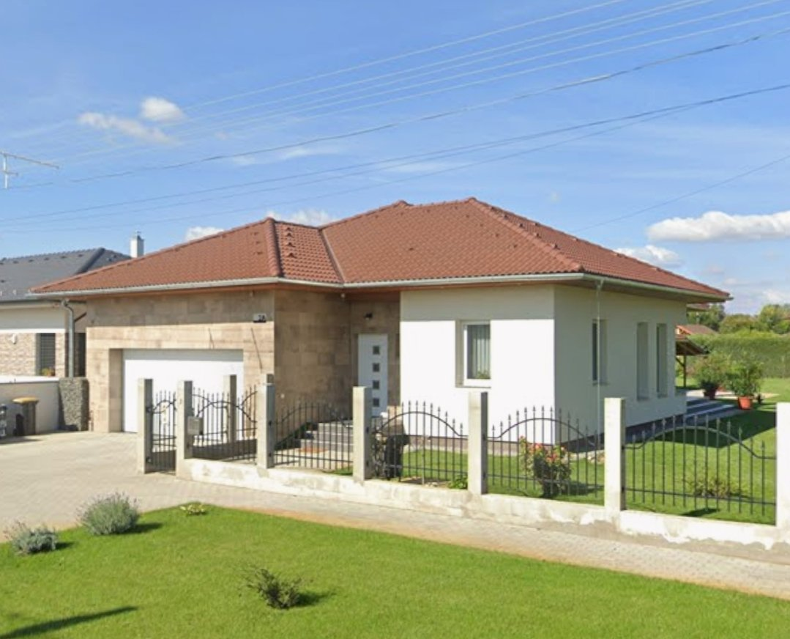
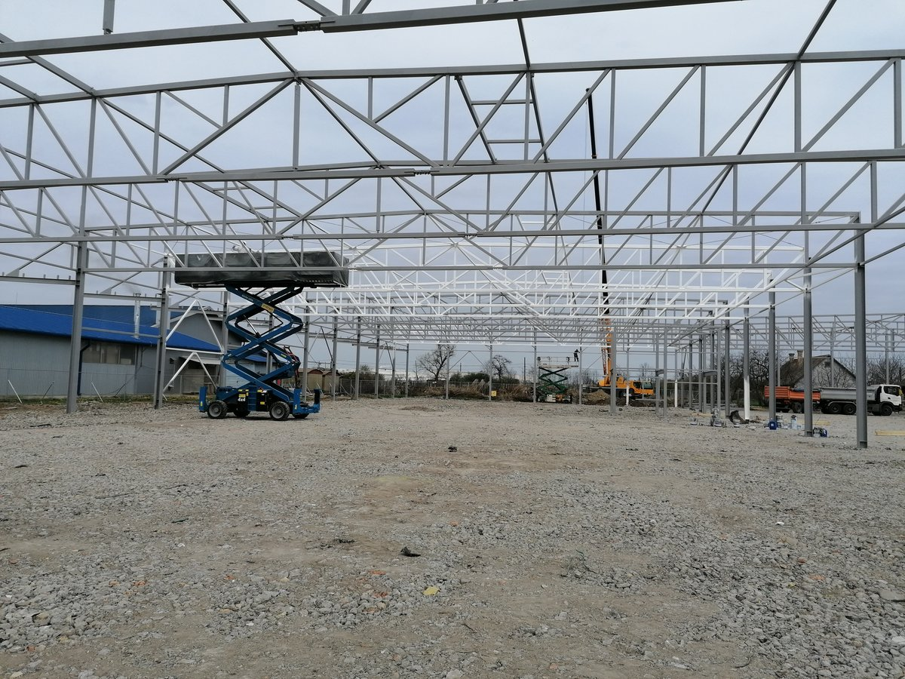
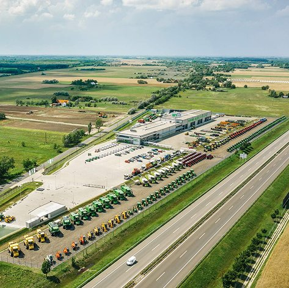

Projektvezetői referenciák
2021

Projektvezetői referencia
Gyógyszerraktár-csarnok kivitelezése
Csongrád
2021–23

Projektvezetői referencia
RR Fa szerkezetű lovarda és családi ház gyártása és kivitelezése
2020
Ellypsum élményfürdő — 2500 m² alu homlokzati függönyfal és nyílászárók gyártása és kivitelezése
2022–23
MATE kampusz épületeinek energetikai korszerűsítése
Műemlék jellegű homlokzati nyílászárók bontása, gyártása, beépítése (1200 m² alu nyílászáró, 970 db kapcsolt gerébtokos fa ablak, 297 fa hőszigetelt ablak).
Gödöllő
2022

Projektvezetői referencia
Légimentőbázis acélszerkezet gyártása és kivitelezése, homlokzatburkolás
Marcali
2024

Projektvezetői referencia
Sipospack csarnok acélszerkezet gyártása és kivitelezése, homlokzatburkolás
Sóskút
2022–23
Hotel Relax — alu homlokzati nyílászárók
Pogány
2023–24
MNB — belső alu üvegfalak, acél tartószerkezet gyártása és kivitelezése
Budapest